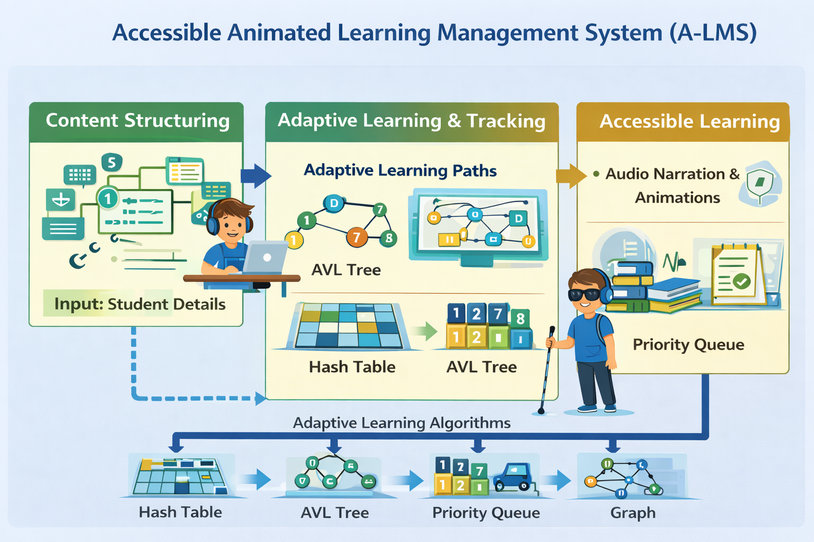

The Accessible Animated Learning Management System (A-LMS) is designed to support inclusive education through structured digital content, animations, and audio-based learning. It helps children and visually impaired learners access education efficiently.
Design and Analysis of Algorithms (DAA) ensures efficient organization of educational content, adaptive learning paths, and real-time performance tracking.
Tree data structures represent subjects, chapters, and lessons hierarchically, enabling structured and easy navigation.
AVL trees maintain balanced educational content, ensuring fast retrieval with O(log n) search time.
BST maintains ordered topics, allowing systematic and progressive learning.
Hash tables store student profiles, preferences, and learning progress with constant-time access.
Queues manage audio narration playback in FIFO order, ensuring correct learning sequence for visually impaired students.
Priority queues prioritize difficult lessons or learners requiring additional assistance, supporting adaptive learning.
Uses the Introsort algorithm — a hybrid of Quick Sort, Heap Sort, and Insertion Sort — to efficiently rank students based on performance and completion levels.
Graphs represent prerequisite relationships between topics, ensuring students follow correct learning paths.
View Complete Integrated C++ Code | DS / Algorithm | Design Technique | Time Efficiency | Space Efficiency | Stability | Adaptive | In-Place |
|---|---|---|---|---|---|---|
| Tree | Hierarchical | O(n) | O(n) | Stable | No | No |
| AVL Tree | Self-Balancing | O(log n) | O(n) | Stable | No | No |
| BST | Ordered | O(log n) | O(n) | Stable | No | No |
| Hash Table | Hashing | O(1) | O(n) | Stable | No | No |
| Queue | FIFO | O(1) | O(n) | Stable | No | No |
| Priority Queue | Heap | O(log n) | O(n) | Unstable | No | No |
| Introsort | Hybrid Sorting | O(n log n) | O(log n) | Depends | Yes | Yes |
| Graph | Graph Theory | O(V + E) | O(V + E) | N/A | No | No |